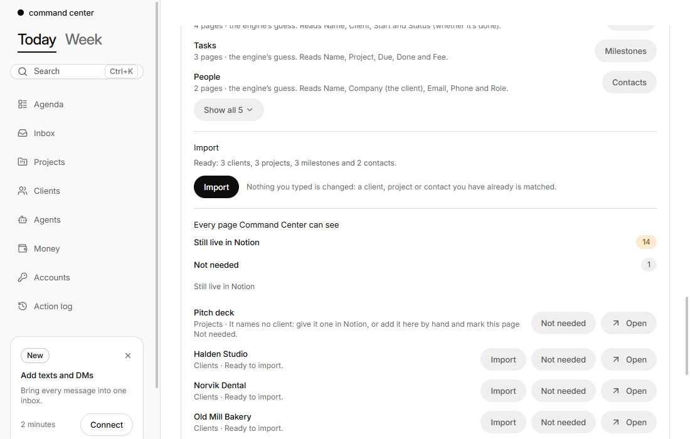

Bringing in Notion
If your clients and projects live in Notion, bring them into Command Center once, check nothing was missed, then retire Notion. Command Center only ever reads Notion; it never writes there.
Connect
- At app.notion.com/developers/connections, as your workspace's owner, create an internal connection called Command Center.
- On its Configuration tab, let it read content only: untick updating and inserting content and any comment boxes. Under user information, choose Read user information without email addresses, so a page's people read as names, never email addresses.
- On its Content access tab, pick every page and database you still use. A page's children come with it.
- Copy its API token (it starts
ntn_), paste it into Settings › Sources › Notion import, and choose Connect Notion. The token goes to your keychain.
Import
The Notion import card lists each database it can see and what it'll become: Clients, Projects, Milestones, Contacts, Contracts, Accounts, or Not imported. Its guess is just a guess until you choose.
- Each page shows whether it'll be added, matched to something you already have (and left as you typed it), or doesn't fit, with why.
- Choose Import. It's one change, with one Undo in the action log.
- Set aside any page with Not needed.

Long lists show their first rows, with Show all. Big workspaces are fine: up to 20,000 pages and 200 databases, with the read's progress as it goes. Relations, rollups and formulas are read whole.
Files and secrets
- A contract's file kept in Notion is copied into Command Center when you import it (up to 25 MB, from Notion's own file hosts only). A link to a file kept elsewhere opens in your browser from its row.
- Passwords, keys, tokens, PINs, recovery codes and card numbers are never read. A field named like one stays in Notion, and the card says so: keep it in your password manager.
Keeping an eye on what's left
Until you retire it, Notion is read again when you choose Check Notion now and at each touchpoint, before the brief. A page stays live while it's waiting, doesn't fit, sits outside your databases unsettled, or changed in Notion since you settled it. Open any page in your browser from its row.
- A page that changed in Notion after you imported it shows what changed, field by field. Bring in takes the change; where you changed the same field here too, pick Keep here or Use Notion for it. Checked leaves yours as it is. Either way you can undo it from the action log.
- Pages you haven't shared with the connection can't be read, but links to them are counted, so the card tells you how many to share.
- A page deleted in Notion counts as Gone from Notion, and the import is worked out again without it. An archived page is still read, marked Archived in Notion.
Retire Notion
The checklist has four lines. Three tick themselves: Notion read, with what you shared, Nothing live remains in Notion, and Your databases are locked in Notion once you lock each one you imported (••• › Lock database) and Notion says so; if Notion can't say, you tick it. You tick Every page you still use is shared with the connection. With all four ticked, choose Retire Notion. Command Center forgets the token, and the Sources row reads Retired.